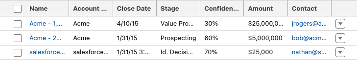
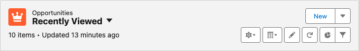
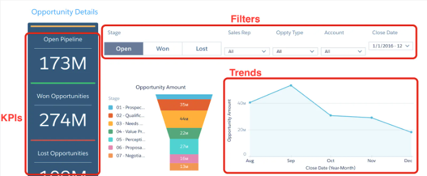
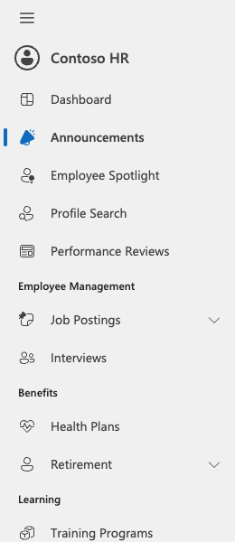
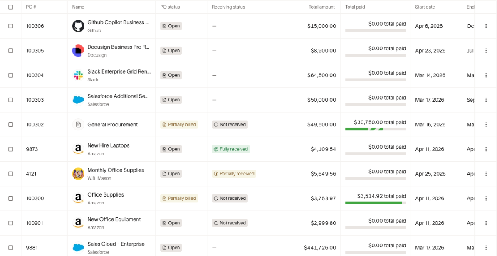
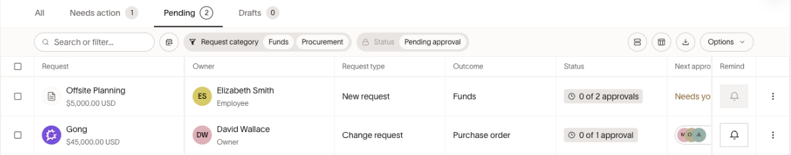
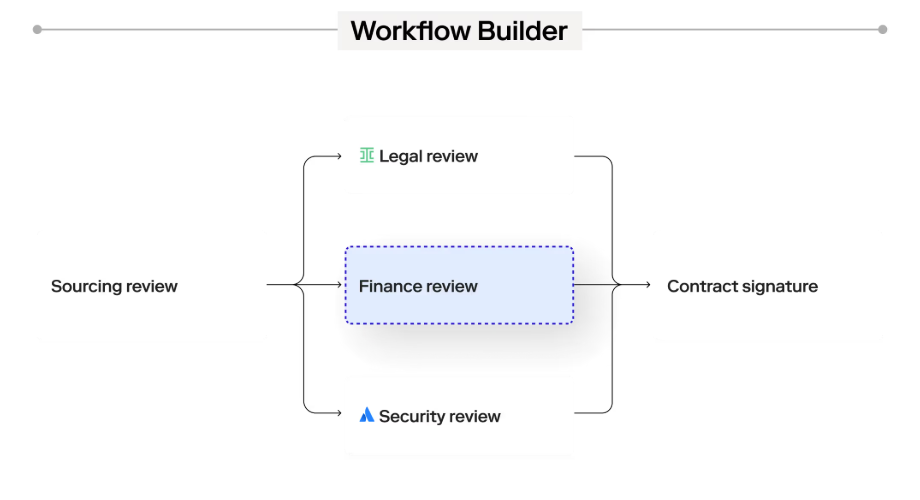
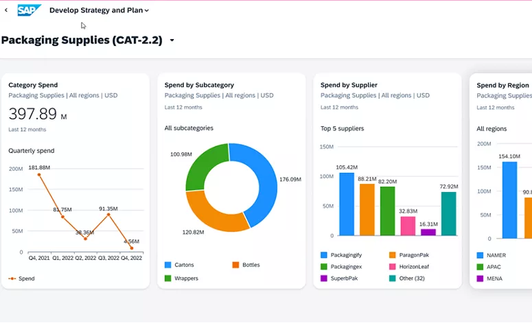

SalesforceRecord table13px type · 32px header · numeric alignmentOpen native PNG ↗Official source ↗
SalesforceRecord header16px insets · compact action groupOpen native PNG ↗Official source ↗
SalesforceAnalytics dashboardEmbedded official tutorial captureOpen native PNG ↗Official source ↗
Microsoft FluentNavigation260px rail · restrained selected stateOpen native PNG ↗Official source ↗
RampPurchase order tableActual product screenshot in official helpOpen native PNG ↗Official source ↗
RampRequest filtersToolbar + owner/type/status disciplineOpen native PNG ↗Official source ↗
ZipWorkflow branchesMarketing illustration: use behavior, reject glowOpen native PNG ↗Official source ↗
SAP AribaCategory dashboardEmbedded dashboard image · not live app DOMOpen native PNG ↗Official source ↗